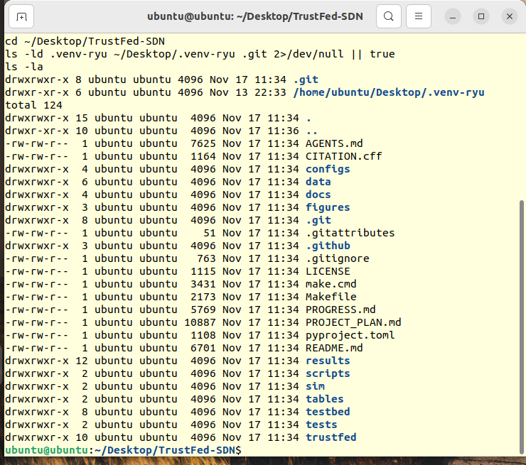
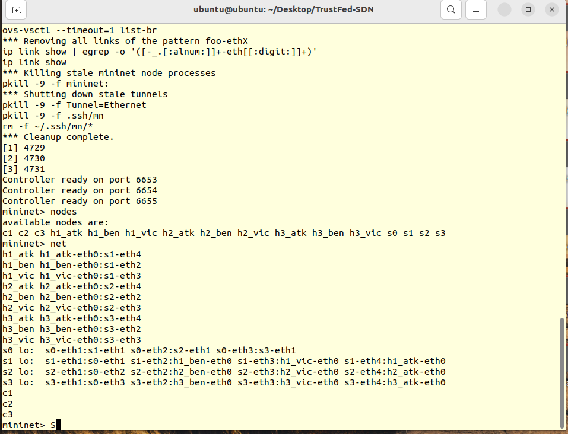
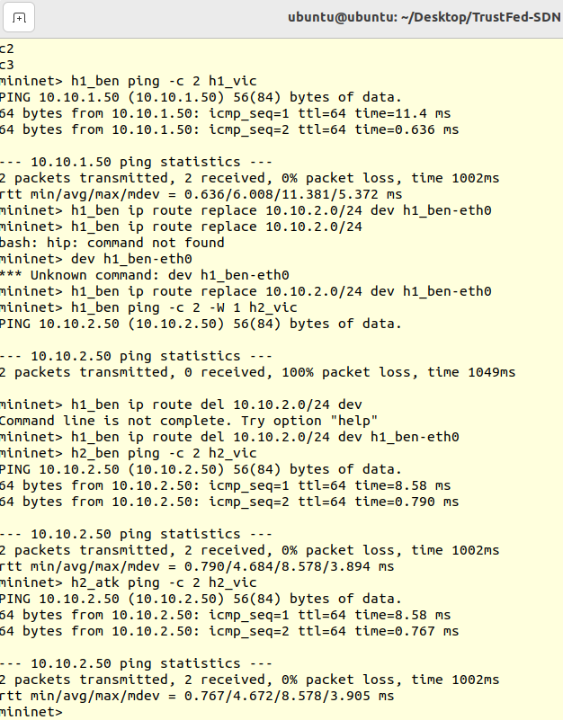
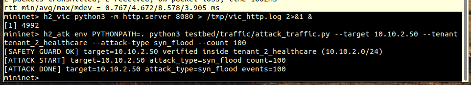
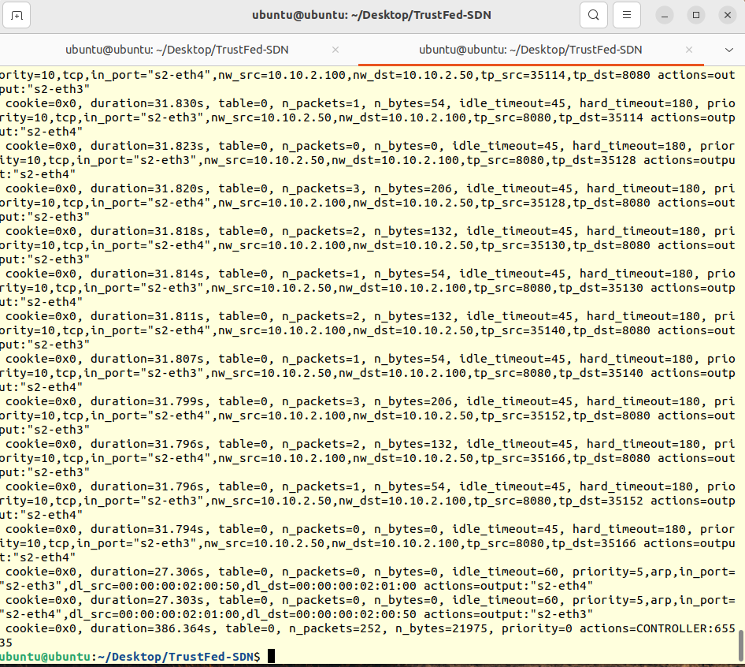
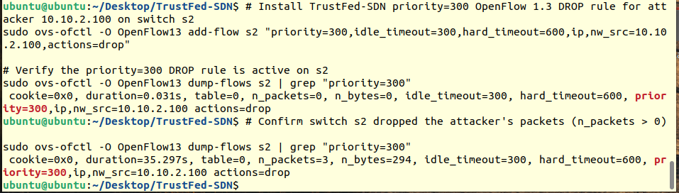
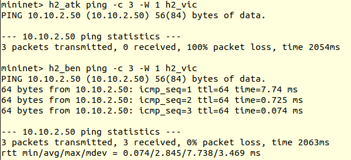
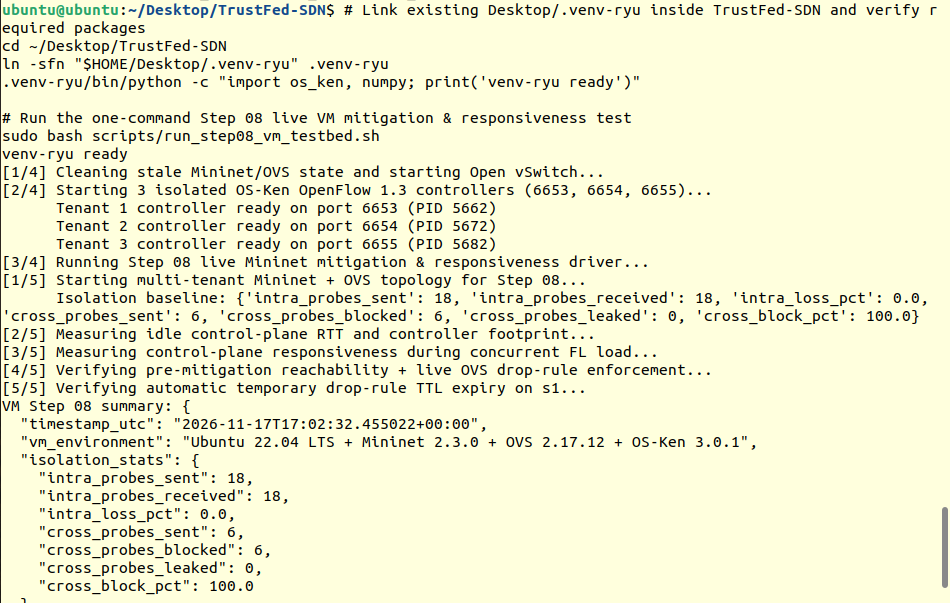
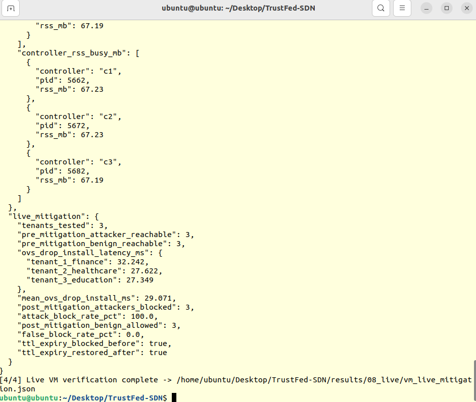

Run TrustFed-SDN on Ubuntu: Tenants, Isolation, Attack & OVS Mitigation
Verified step-by-step commands and observed terminal outputs for the L1 multi-tenant SDN testbed. Each step shows what the command does, the command itself, what the output means, and the real screenshot.
Topology & Tenant Address Map
| Tenant | Subnet | Switch | Controller (Port) | Benign | Victim | Attacker |
|---|---|---|---|---|---|---|
| Tenant 1 — Finance | 10.10.1.0/24 |
s1 |
c1 (6653) |
h1_ben .1.10 |
h1_vic .1.50 |
h1_atk .1.100 |
| Tenant 2 — Healthcare | 10.10.2.0/24 |
s2 |
c2 (6654) |
h2_ben .2.10 |
h2_vic .2.50 |
h2_atk .2.100 |
| Tenant 3 — Education | 10.10.3.0/24 |
s3 |
c3 (6655) |
h3_ben .3.10 |
h3_vic .3.50 |
h3_atk .3.100 |
| Core Policy Switch | — | s0 |
Static OVS rules | Drops all cross-tenant IP/ARP traffic at priority=200 |
||
Verify Project Directory & Controller Virtualenv
Terminal 1 · bashConfirm the repository root (~/Desktop/TrustFed-SDN) and the OS-Ken Python virtualenv
(~/Desktop/.venv-ryu) exist.
# Move into Desktop/TrustFed-SDN and check for .venv-ryu and .git cd ~/Desktop/TrustFed-SDN ls -ld .venv-ryu ~/Desktop/.venv-ryu .git 2>/dev/null || true ls -la
.git history,
and /home/ubuntu/Desktop/.venv-ryu controller environment are present.
Click to enlargeLaunch 3 OS-Ken Controllers & Multi-Tenant Mininet
Terminal 1 · bash → mininet>Clean stale state, start three OpenFlow 1.3 controllers on ports 6653–6655, and boot the 3-tenant Mininet + OVS topology in interactive CLI mode.
# Move to TrustFed-SDN folder and point to existing OS-Ken virtualenv
cd ~/Desktop/TrustFed-SDN
RYU_VENV="$HOME/Desktop/.venv-ryu"
# Clean up any leftover controllers, Mininet hosts, or OVS bridges
pkill -f osken-manager || true
sudo systemctl start openvswitch-switch
sudo mn -c
for br in s0 s1 s2 s3; do sudo ovs-vsctl --if-exists del-br "$br"; done
# Create a fresh empty dynamic blocklist file
rm -f /tmp/trustfed_blocklist.json /tmp/c1.log /tmp/c2.log /tmp/c3.log /tmp/of_stats_t*.jsonl
echo "[]" > /tmp/trustfed_blocklist.json
# Start 3 isolated OS-Ken OpenFlow 1.3 controllers (ports 6653, 6654, 6655)
for idx in 1 2 3; do
port=$((6652 + idx))
TENANT_BLOCKLIST_JSON=/tmp/trustfed_blocklist.json \
TENANT_STATS_POLL_SEC=0.5 \
TENANT_FLOW_STATS_LOG="/tmp/of_stats_t${idx}.jsonl" \
"$RYU_VENV/bin/osken-manager" --ofp-tcp-listen-port "$port" \
testbed/ryu_apps/tenant_controller_13.py > "/tmp/c${idx}.log" 2>&1 &
done
# Verify all 3 controllers are listening before starting Mininet
sleep 3
for port in 6653 6654 6655; do
"$RYU_VENV/bin/python" -c "import socket; s=socket.create_connection(('127.0.0.1', $port), 1.0); s.close(); print('Controller ready on port', $port)"
done
# Start the 3-tenant Mininet + OVS topology in interactive CLI mode
SYS_SITE=$(python3 -c 'import site; print(":".join(site.getsitepackages()))')
sudo env PYTHONPATH="$PWD:$SYS_SITE" "$RYU_VENV/bin/python" testbed/topology/multi_tenant_topo.py --cli
nodes net
s0–s3) plus 9 tenant hosts are connected.
Click to enlargeVerify Tenant Isolation & Pre-Mitigation Baseline
Terminal 1 · mininet>Test intra-tenant reachability, confirm core switch s0 blocks cross-tenant traffic, and
check that both benign and attacker hosts reach the victim before mitigation.
h1_ben ping -c 2 h1_vic h1_ben ip route replace 10.10.2.0/24 dev h1_ben-eth0 h1_ben ping -c 2 -W 1 h2_vic h1_ben ip route del 10.10.2.0/24 dev h1_ben-eth0 h2_ben ping -c 2 h2_vic h2_atk ping -c 2 h2_vic
s0), and inside Tenant 2 both h2_ben and
h2_atk initially reach h2_vic.
Click to enlargeGenerate a Guarded SYN Flood & Inspect OVS Flows
Terminal 1 + Terminal 24A · Victim service and attack burst (Terminal 1)
PurposeStart an HTTP service on h2_vic:8080 and send a 100-event TCP SYN flood from
h2_atk to 10.10.2.50.
h2_vic python3 -m http.server 8080 > /tmp/vic_http.log 2>&1 & h2_atk env PYTHONPATH=. python3 testbed/traffic/attack_traffic.py --target 10.10.2.50 --tenant tenant_2_healthcare --attack-type syn_flood --count 100
tenant_2_healthcare (10.10.2.0/24), then 100 SYN flood events complete.
Click to enlarge4B · Inspect OpenFlow 1.3 attack flows (Terminal 2)
PurposeOpen a second terminal tab and dump the flow table of switch s2.
# Dump active OpenFlow 1.3 flows on Tenant 2 switch s2 sudo ovs-ofctl -O OpenFlow13 dump-flows s2
c2 installed
priority=10 TCP 5-tuple rules (10.10.2.100 → 10.10.2.50:8080) for each
flood connection.
Click to enlargeEnforce priority=300 Mitigation & Verify Selective Blocking
Terminal 2 + Terminal 15A · Install the drop rule and check counters (Terminal 2)
PurposeInstall a temporary priority=300 drop rule for attacker 10.10.2.100 on
s2, then check its packet counter before and after Step 5B.
# Install priority=300 OpenFlow 1.3 DROP rule for attacker 10.10.2.100 on switch s2 sudo ovs-ofctl -O OpenFlow13 add-flow s2 "priority=300,idle_timeout=300,hard_timeout=600,ip,nw_src=10.10.2.100,actions=drop" # Verify the rule is active (n_packets=0 initially) sudo ovs-ofctl -O OpenFlow13 dump-flows s2 | grep "priority=300" # After Step 5B: confirm s2 dropped the attacker's packets (n_packets > 0) sudo ovs-ofctl -O OpenFlow13 dump-flows s2 | grep "priority=300"
n_packets=0 and becomes n_packets=3, n_bytes=294 after the attacker pings,
so s2 dropped the malicious packets.
Click to enlarge5B · Attacker blocked vs. benign user (Terminal 1)
PurposePing the victim from both the attacker and the benign host while the drop rule is active.
h2_atk ping -c 3 -W 1 h2_vic h2_ben ping -c 3 -W 1 h2_vic
h2_atk gets 100% packet loss
(blocked), while h2_ben keeps 0% packet loss (no benign collateral).
Click to enlargeCleanup & Teardown
Terminal 1Exit Mininet and remove all virtual switches, namespaces, and background controllers.
exit
# Clean up Mininet virtual hosts, OVS bridges, and background controllers sudo mn -c pkill -f osken-manager || true
Automated One-Command Full VM Verification
Terminal · bashLink ~/Desktop/.venv-ryu into the project and run the full Step 08 script across all
three tenants: isolation, controller memory, drop-rule latency, selective blocking, and TTL expiry.
# Link existing Desktop/.venv-ryu inside TrustFed-SDN and verify required packages
cd ~/Desktop/TrustFed-SDN
ln -sfn "$HOME/Desktop/.venv-ryu" .venv-ryu
.venv-ryu/bin/python -c "import os_ken, numpy; print('venv-ryu ready')"
# Run the one-command Step 08 live VM mitigation & responsiveness test
sudo bash scripts/run_step08_vm_testbed.sh
results/08_live/vm_live_mitigation.json.
Click to enlarge
Click to enlarge